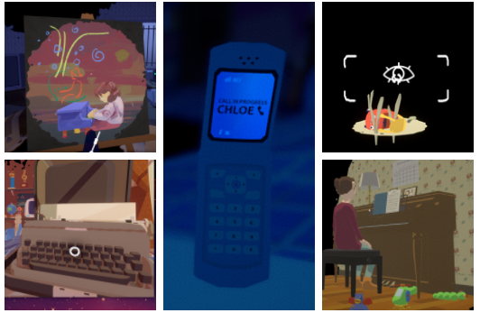

This is my analysis on the first person narrative adventure called Before Your Eyes. This
game was developed by GoodbyeWorld Games and published by Skybound Games
My network consists of the main characters, objects and events that occur in the game
centered around the player character Benny. He is the center as the world is happening
before his eyes.
The game Before Your Eyes is a masterpiece of an indie game and an inovation of what
narrative and adventure games can be. First and formost the most impessive feature of
this game is its blink interactions. Throught the use of a face cam and eye tracking
software the game allows you to interact with the game world around you by blinking.
Throught blinking you decide what interactions to have, what you see in the invironment
around you, how fast you view something or how slow. The game is determined by what you
see before your eyes.
Characters
The Main characters that you interact with during your journey, Top Left
is the Ferryman, Bottem Left is Richard your father, Middle is Elle your mother,
Top Right is Ernie your Cat, and Bottem Right is Chloe your
neighbor.
In this game you are invited to play from the first person prospective of a
young boy named Benny. Throughout your playthrough of the game you grow up and
make decisions through the use of your eyes. You litteraly blink your way
throught the life of this boy as he grows up and experiences the world around
him. During your journey throughout your life as Benny you will interact with a
number of other characters. The main characters you will interact with will be
Elle who is your mother, she is a composer and accoutant, when you learn a part
of her coposition by ear she will encourage you into to life of a pianist. Then
we have Richard your father, while he doesnt play the most active part in your
life or at least not as much compared to your mother he is still very supportave
of you and cares for you deeply. He is also the person who brings Ernie the cat
into your life as well as gives you the camera that leads to you meeting your
neighbor Chloe. Next we have Ernie the cat, while there isnt much true
interaction with him he serves as a emotional companion and as a maker of time
passing as you grow older. Then comes your neighbor Chloe, you meet her while
taking photos in your backyard, while she isnt the nicest to you at first you
slowly grow closer together and become friends or more depenfing on your
decisions. And last but not least are the Ferryman and the Gatekeeper, the
Ferryman serves as your story teller in the after life, his job is to tell your
lifes story to the Gatekeeper who will judge you and decide if you are worthy to
live in thier grand city in the after life.
Objects

A few of the main objects the you interact with and help you to progress
through the game, Top Left is Artwork, Bottem Left is the Typewritter, Middle is
the Cellphone, Top Right is the Camera, Bottem right is the Piano.
Throught the game you interact with a magnitude of objects not always to
completer some sort of objective but to just enhance the overall feeling of the
game. You draw and paint and make art as a child and as you grow up and you see
developlment as time goes on. You use the typewritter your mother gives you to
write your life story while you are sick in bed. The cell phone is used to keep
in touvh with your friend Chloe. You use your camera to take pictures of the
environment arond you and take the beuty of the world in. You play the piano
under your mothers insttruction hoping to make her proud. You arent completeing
a task you are simply just living your life with these objects and others.
Settings
Your life as benny takes place in a variety of setting but a large majority of
the game takes place in your humble home in your quaint town by the sea. The
other more major setting that you will find yourself in is the Ferrymans's boat
and the Gatekeepers tower where your life story is laid our infront of you and
you are judged on your choices. You also find other settings like the beach
which is where you first open your eyes to your life story. Thers also the car
which you ride in with your mother and a few other minor places.
Visuals and Sound
The visuals for this game consist of a very fun and artsy animation style from a
first person perspective and the visual invironment grows around you from what
you percieve by blinking. As for the sound there is the ambient sounds of a
normal life and a sometimes a piano can be heard if you or yourmother are found
playing it.
A comment on reality
In my opinion this game comments on our reality in two ways. One way is about life and
the things that go on around us and the other is on the self. On the way it comments on
life it speaks to the fact that if we move along to fast in life you are bound to miss
out and miss the meaning in it. As an example while you play the game you progress and
interact by blinking, when a metranome symbol appears it means the next time you blink
you will jump forward in time weather its days, months or years, the thing is you cant
go back. The special thing with the metranome is its going to appear weather the events
going on around you are done or not. Blink to soon and you might miss a conversation or
a chance to interact with someone and thers no do over its gone. I think this it true
about life in a way as well life can fly by in the blink of an eye if we just keep on
moving through and dont try our best to keep our eyes open and enjoy the moment. The
second way this comments on reality is on the self. I belive this is also portrayed by
my Kumu network. You are the main character in you life. In my network the largest piece
with the most connections is Benny. You are the one who chooses who it is you interact
with, you make your own choices your own connections your life is yours you decide what
happens with it. While some of the other pieces are play a large part in your life they
pale incomparison in how important you are to your own life. That is what I believe this
game has to comment on.